2版（11/14）。ブランチ design/rotation-view。アプリには入れていません。案A だけ直し、B・C は1版のまま。見本は本番で見た JA339J の今日の便を 14時50分の場面にしたもの。
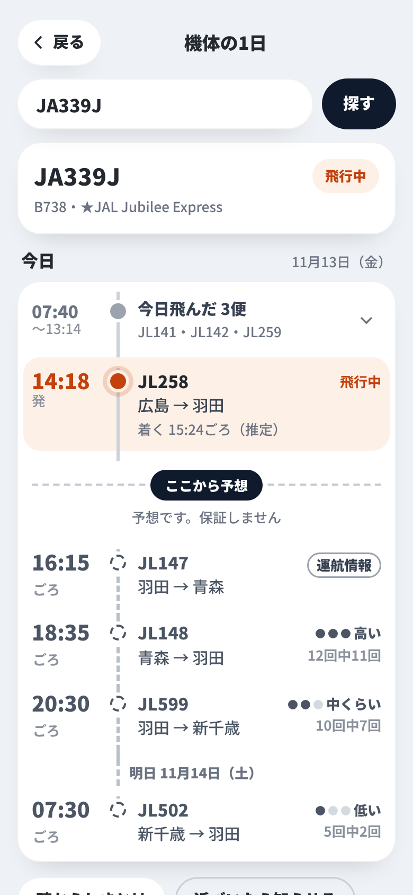
A1 案A 機体の1日（2版）飛んだ便は1行にたたみ、開いたときに「いま」と予想が見える。地図は予想の下へ。確からしさに回数、運航情報は縁のピル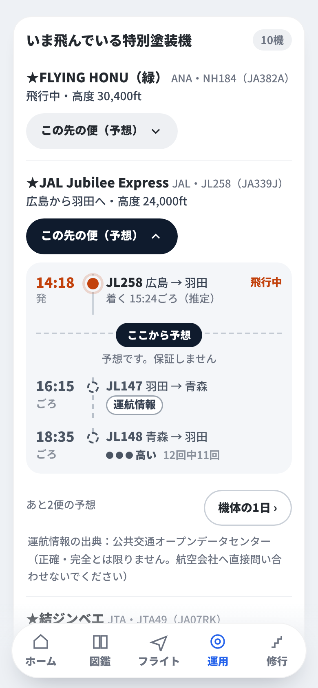
A2 案A 運用の特別塗装機（2版）小さい時間の線。「14:18 発」、予想は2便まで。回数と運航情報のピル、出典を足した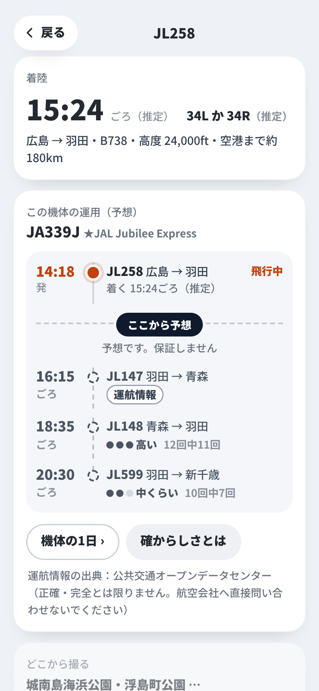
A3 案A 撮る人のくわしく（2版）着陸の滑走路にも（推定）。この機体の運用（予想）は同じ部品で、回数・運航情報のピル・出典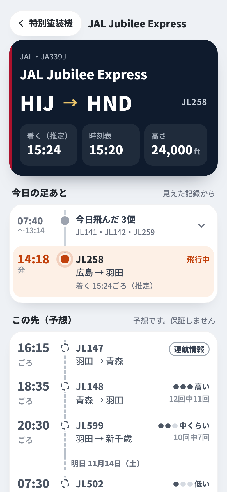
A4 案A 特別塗装機のくわしく（2版）今日の足あとは飛んだ便を1行にたたみ、開いたときに「この先（予想）」の1便目まで見える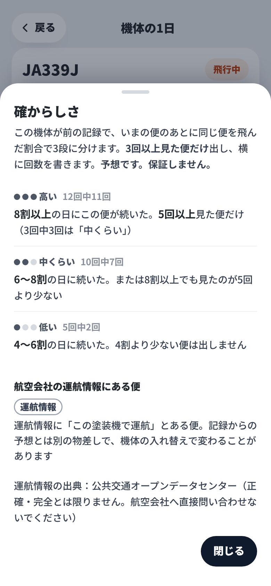
A5 案A 確からしさとは（2版）3段の決め方に回数を足し、運航情報は別の見出しに分けた。出典と断り書きも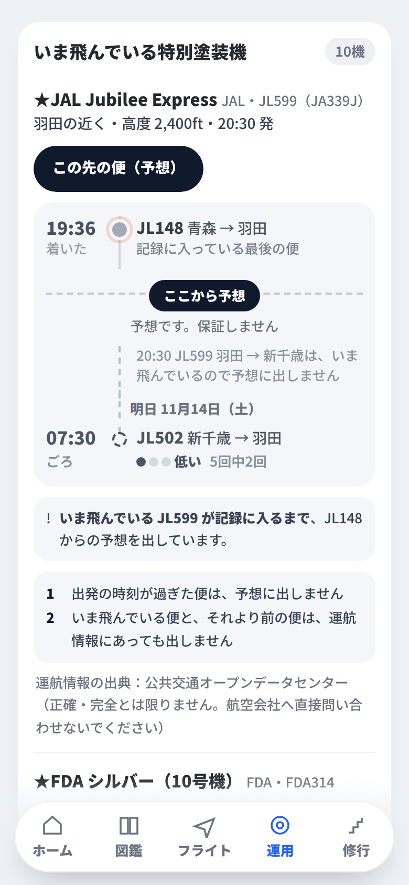
A6 案A 予想が出ないとき（2版）過ぎた便・いまの便より前の便は予想に出さない。JL148 のあと、いま飛ぶ JL599 は出さず、明日の JL502 から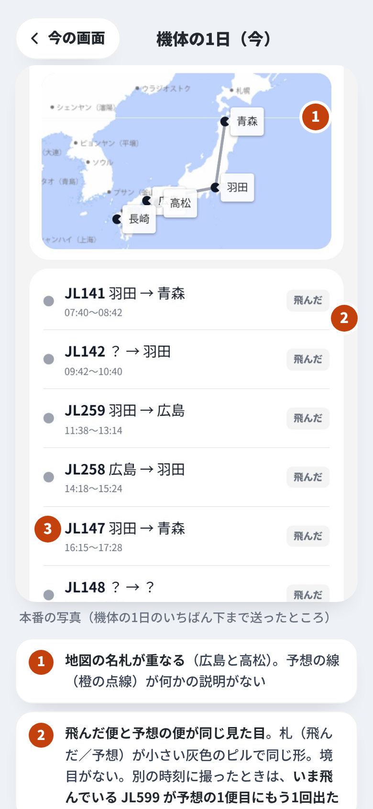
00a 今：機体の1日本番で撮った JA339J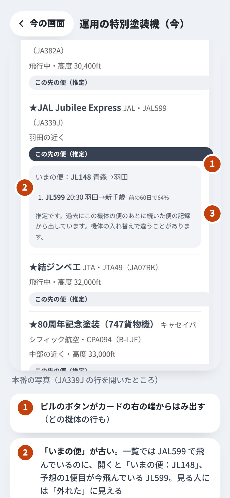
00b 今：運用の特別塗装機この先の便を開いたところ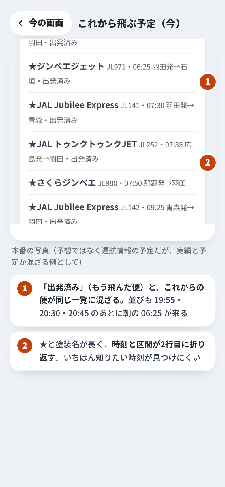
00c 今：これから飛ぶ予定運航情報の予定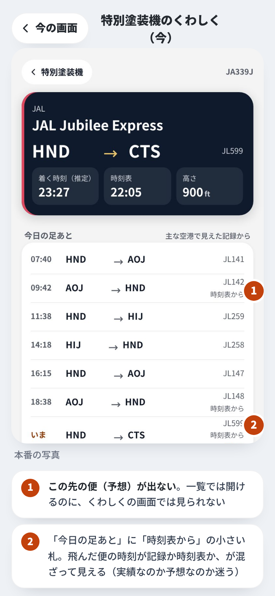
00d 今：特別塗装機のくわしくJA339J を開いたところ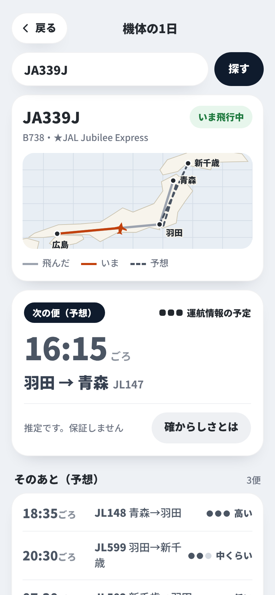
B1 案B 機体の1日次の1便を大きく（1版のまま）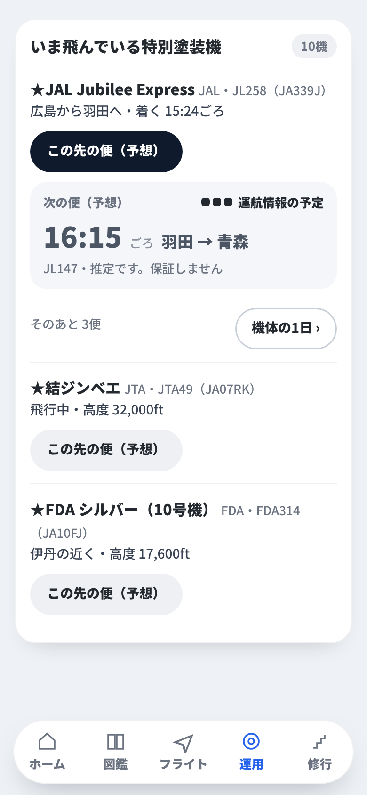
B2 案B 運用の特別塗装機1版のまま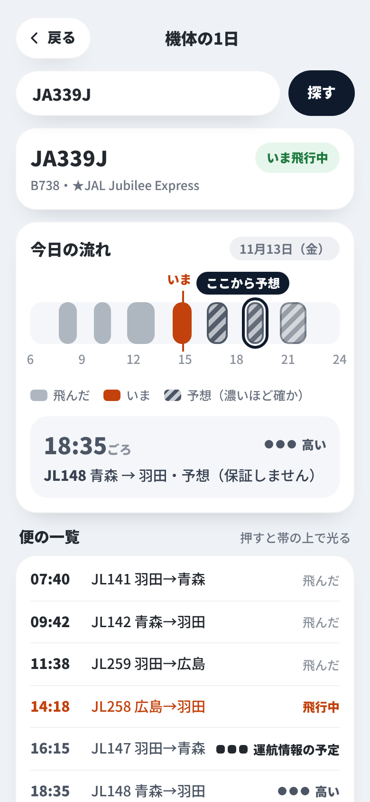
C1 案C 機体の1日1日の帯（1版のまま）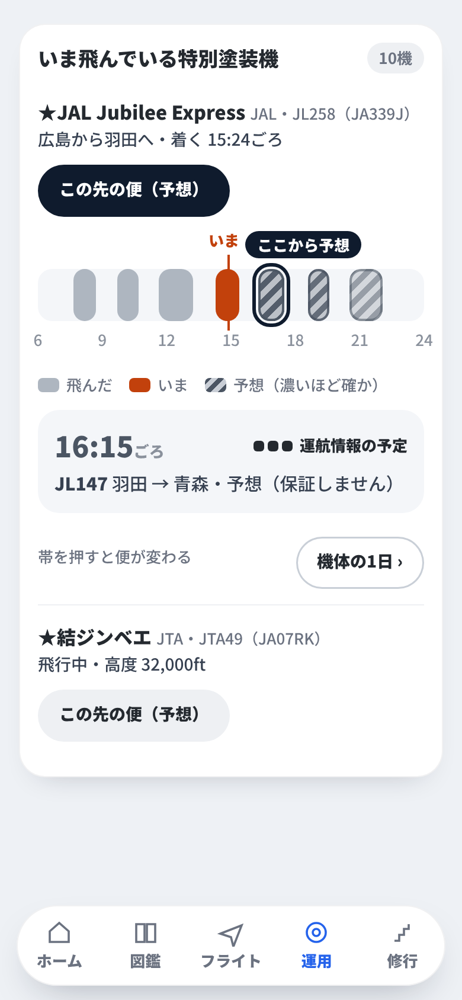
C2 案C 運用の特別塗装機1版のまま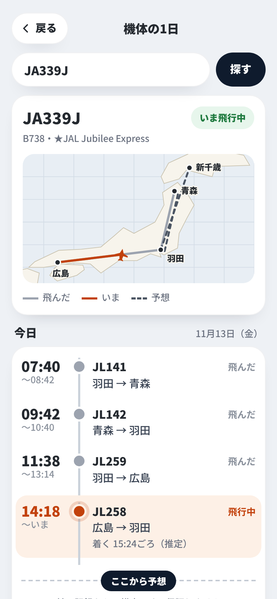
A1 案A 機体の1日（1版）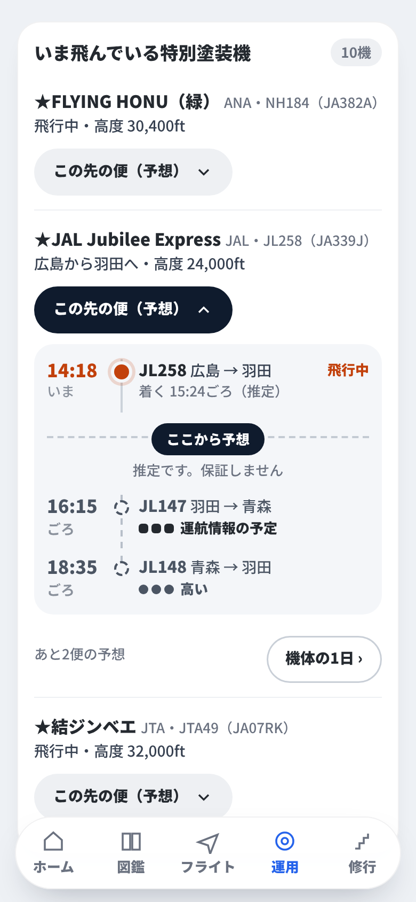
A2 案A 運用の特別塗装機（1版）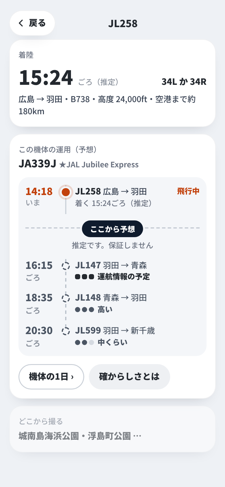
A3 案A 撮る人のくわしく（1版）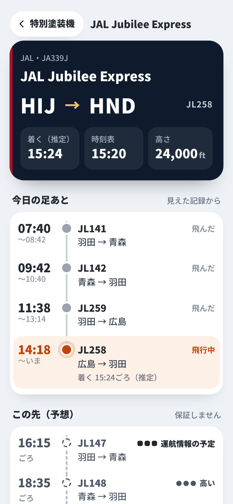
A4 案A 特別塗装機のくわしく（1版）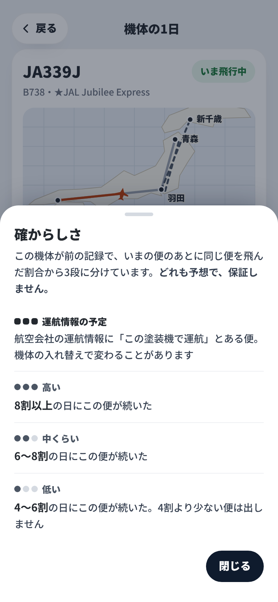
A5 案A 確からしさとは（1版）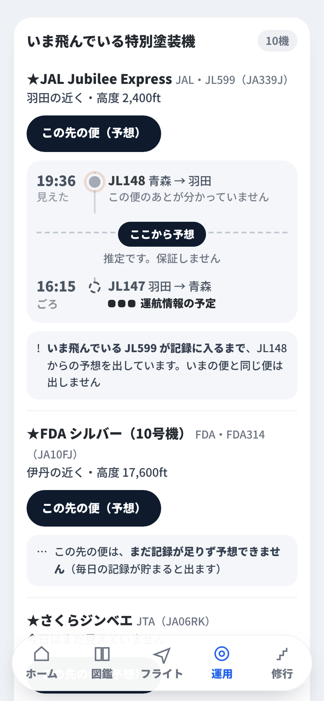
A6 案A 予想が出ないとき（1版）